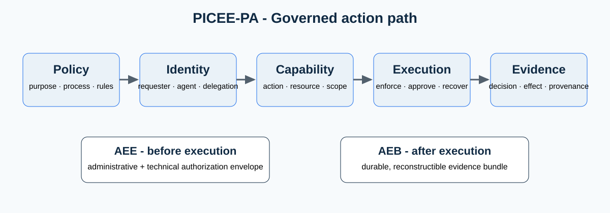

Contribution
PICEE-PA does not claim to invent policy engines, agent identity, sandboxing or audit. It proposes a vendor-neutral public-administration application profile that connects administrative authorization — purpose, process, delegation and accountability — to technical authorization — identity, capability, policy enforcement and runtime controls — for each AI-initiated action.
Architecture

Five layers
Policy
Purpose, process, applicable rules, constraints and risk.
Identity
Requester, agent or workload, sponsor and delegation chain.
Capability
Bounded action, resource, data scope and budgets.
Execution
Fail-closed enforcement, approvals, isolation and recovery.
Evidence
Attributable policy decision, actual action, outcome and provenance.
AEE and AEB
AEE — Administrative Execution Envelope is the proposed structured pre-execution envelope describing the administrative and technical authority under which an AI-initiated action may be considered.
AEB — Administrative Evidence Bundle is the proposed post-execution evidence package supporting durable reconstruction of authorization, execution, approvals, outcomes and provenance.
Downloads and citation
Lombardi, V. (2026). PICEE-PA: Governed AI Execution for Public Administration . Version 1.0.0. Zenodo.
DOI: 10.5281/zenodo.22229330